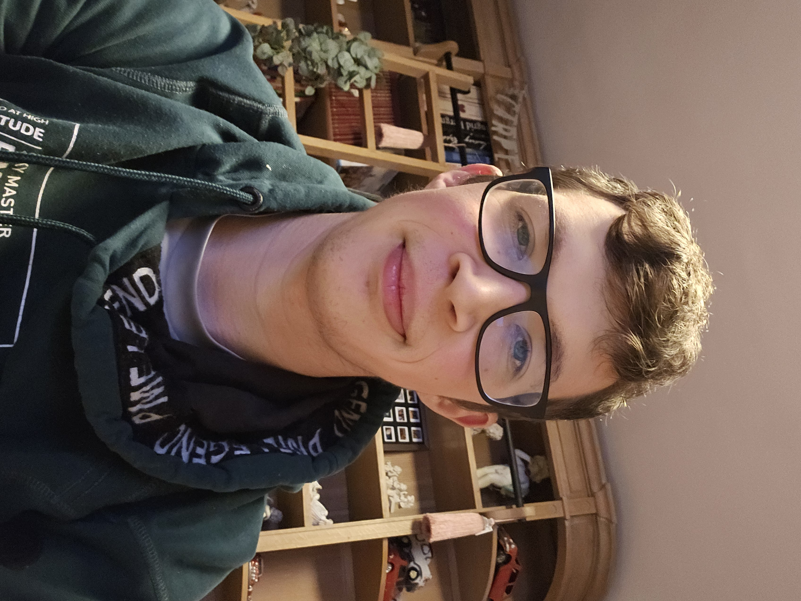

Hallo, ik ben Robin
Ik ben Robin Herickx, 23 jaar, en studeerde af aan Thomas More als professionele bachelor Elektronica-ICT, met afstudeerrichting Applied Artificial Intelligence. Ik hou ervan om projecten uit te werken: een idee bedenken en uitzoeken hoe ik het kan realiseren.
In mijn vrije tijd ben ik bezig met 3D-printen, elektronica en programmeren.
Wat vind je hier?
Dit is mijn persoonlijke website, waarop ik mezelf graag aan je voorstel. Je vindt hier mijn CV en mijn motivatiebrief.
Daarnaast kan je hier de hardware- en softwareprojecten bekijken die ik door de jaren heen gemaakt heb: van zelfgebouwde robots en elektronica tot apps, webshops en AI-projecten. Bij elk project lees je wat het is en hoe ik het gemaakt heb.